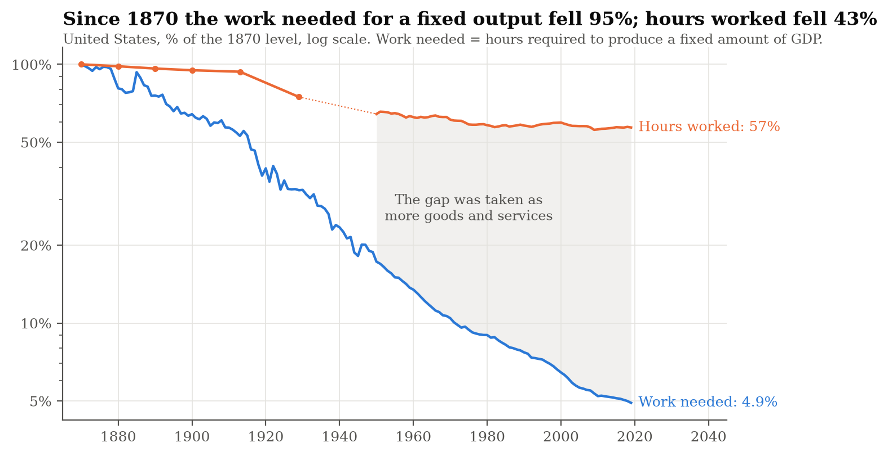
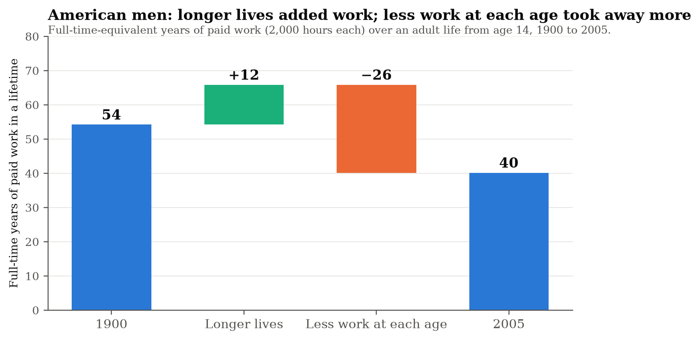
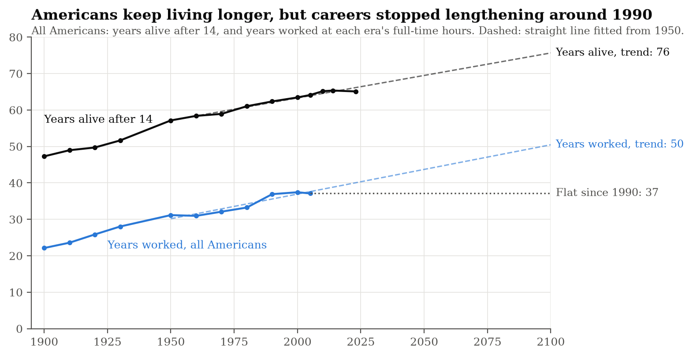
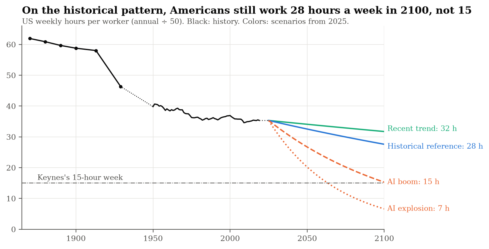
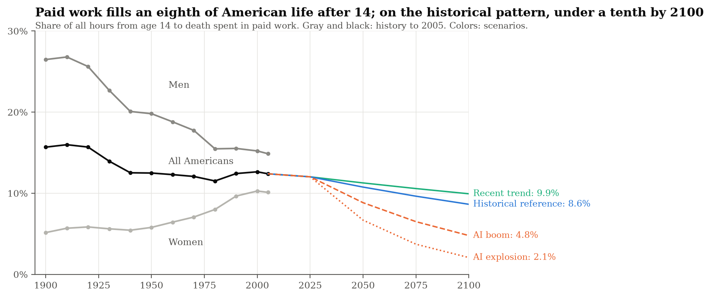
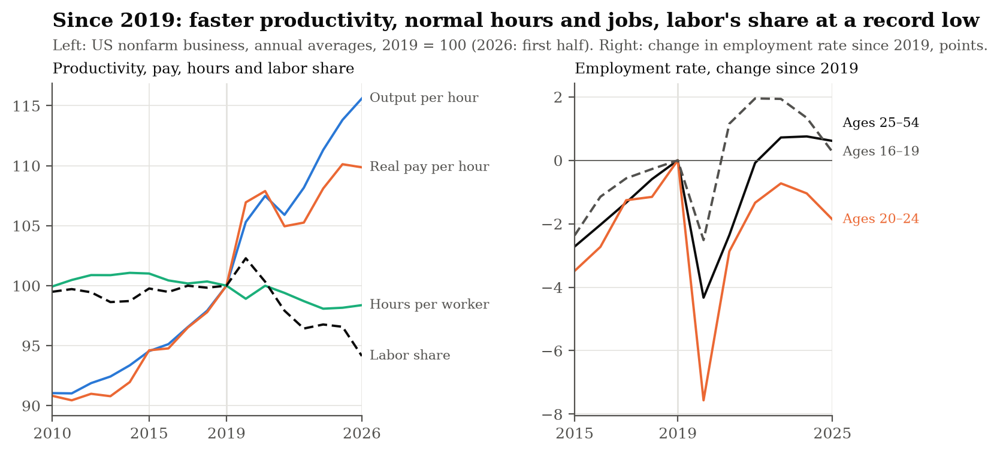

For more than two centuries, some of the world's most brilliant observers have looked at new machines and concluded that human labor was on its way out. In 1784, Benjamin Franklin calculated that four hours of daily work could supply all the necessities and comforts of life if society organized production sensibly. In 1930, John Maynard Keynes predicted that living standards in rich countries would rise four- to eightfold within a century, leaving our grandchildren with a “fifteen-hour week.”
Today, advances in artificial intelligence have revived that prediction in a far starker form: post-labor economics, a framework popularized by David Shapiro. Machines have already replaced much of the physical muscle that once sustained civilization; if AI can also replace cognitive labor, what meaningful work will remain for humans? In theoretical models where AI can perform nearly every cognitive task, human wages are pinned to the falling cost of computation, and labor's share of national income tends toward zero. Popular accounts update a 1983 analogy from Nobel laureate Wassily Leontief: AI will do to workers what the tractor did to the draft horse.
Yet forecasts of the “end of work” routinely conflate three fundamentally different economic events:
- More output per hour: A machine lets each hour of work produce more goods and services.
- Affluent leisure: Rising prosperity finances shorter workweeks, longer schooling, and earlier retirement that households freely choose.
- Involuntary displacement: A machine eliminates jobs without making the displaced workers any richer.
We show in this essay that the first has happened continuously for more than a century and a half. The second has happened, but far more slowly and unevenly than expected. The third is what the horse story is actually about—and it can happen even while the economy as a whole grows wealthier. Keynes's fifteen-hour week is a story about the second event.
This is the fourth essay in my series on the future of work. While much of Silicon Valley expects AI to wipe out most human jobs, I expect it to set off one of the biggest gold rushes in history. I pushed back on the idea that humans will go the way of the horse in Birds or Horses? When Geoffrey Hinton replied to my first essay, I examined his arguments in A Gold Rush Without Miners? Here, I take a different approach: long-run time-series analysis and trend projection.
By combining 150 years of data on working hours and productivity across the United States and 19 rich countries with a century of American time-use and survival records—and extending the lens through mid-2026 to audit the first years of generative AI—we can test the post-labor thesis against history.
The historical record points strongly toward less-labor economics: a world in which work recedes gradually, mostly at the beginning and end of adult life, while society takes the vast majority of its productivity gains as higher material consumption. History cannot prove that AI will never break that pattern. It can, however, show what a break would look like, and that whether AI produces unprecedented freedom or widespread insecurity depends not simply on what machines can do, but on who receives the wealth they create.
The short version
- Machines have saved labor at 2% a year since 1890, but we took the savings as goods, not time.
- Most of America's shorter workweek came in one institutional burst, between 1913 and 1950. The eight-hour-day movement, unions, new laws and the Great Depression cut the full-time week from about 58 hours to 42. Before and since, it fell only slowly.
- Work has never stopped suddenly. When work per person did fall fast, it was a recession, a baby boom or a law cutting the standard week.
- We took our extra leisure at the ends of life. Counting housework too, Americans aged 25 to 54 worked about as many hours a week in 2005 as in 1900. Nearly all the cuts came before age 25 and after 55.
- On the historical pattern, the average American worker will still work about 28 hours a week in 2100. Keynes's fifteen-hour week needs either growth far beyond anything America has seen or a new shorter-hours movement like that of the 1910s.
- The first years of AI look normal, with two exceptions. Productivity, hours, jobs and pay have stayed within their historical range. What is unusual is who gets the output and who gets hired: labor's share of business income is at a record low, and young adults' employment has lagged the business cycle.
1. Machines save labor fast; we take the savings as goods
The extraordinary achievement of modern economic growth is that humanity can produce vastly more output with vastly less human effort. Since 1890, real output per hour in the United States has grown at an average rate of 2.1% per year.
By 2019, producing a fixed amount of output took just 4.9% of the hours it took in 1870. Yet hours per worker were still 57% of their 1870 level.

Fig. 1 — Hours per worker: Huberman & Minns (2007) to 1929, full-time nonfarm production workers; Penn World Table 10.0 from 1950, all workers. GDP per hour: Bergeaud, Cette & Lecat (2016), extended to 2019 with PWT. The two hours series cover different workers, so the splice is dotted.
| Benchmark era | Annual hours done then | Hours needed at 2019 productivity for the same output |
|---|---|---|
| A year of work in 1870 | 3,096 hours (62 hours/week) | 152 hours (~3 hours/week) |
| A year of work in 1900 | 2,938 hours (59 hours/week) | 225 hours (~4.5 hours/week) |
| A year of work in 1929 | 2,316 hours (46 hours/week) | 349 hours (~7 hours/week) |
| A year of work in 1950 | 1,990 hours (40 hours/week) | 567 hours (~11.3 hours/week) |
| A man's entire working life in 1900 | 108,400 hours (54.2 FTE years) | ~8,300 hours (4.2 FTE years) |
If machines have made labor so much more productive, where did all that saved time go? We can partition the growth of output per person (Q/N) into three exact accounting margins: hourly productivity (A = Q/(Eh)), hours per worker (h), and the share of the population employed (E/N):
In consistent Penn World Table (PWT) data from 1950 to 2019, US output per person grew 1.99% per year:
- Productivity (A): +1.91 percentage points
- Hours per worker (h): −0.17 percentage points
- Employment per person (E/N): +0.25 percentage points
This presents an uncomfortable challenge to the familiar technological-utopian narrative: making work more productive does not automatically make working less either possible or attractive for the people performing it. It is tempting to say we simply chose goods over leisure, but that is too simple. Employers set schedules, households need income, taxes change incentives, new industries expand what people consider a normal standard of living, and the benefits of growth do not reach everyone equally. Still, the aggregate outcome is unmistakable: overwhelmingly, rich societies took the dividend of technological progress as more stuff, not more time.
2. The shorter week came in one burst
The working week did not shrink steadily. Plot it since 1870 and you see a plateau, a cliff and another plateau. Between 1913 and 1950, eight-hour-day laws, union contracts, the International Labour Organization's first convention, the Depression and the Fair Labor Standards Act of 1938 cut the American full-time week from about 58 hours to about 42. Outside that burst, each 1% gain in output per hour has gone with hours falling only about 0.1% in America and 0.16% across rich countries. After 1950 America froze near 40 hours, while Western Europe cut annual hours by more than a quarter through shorter weeks and longer holidays. Europe and America had the same machines. They had different institutions.
Pay matters too. After 1975 the real hourly earnings of production and nonsupervisory workers grew only 0.1–0.6% a year, depending on the price index, and hours stopped falling at about the same time. That proves nothing about cause, but it carries a lesson for AI: gains that never reach typical paychecks will not buy anyone a shorter week.
3. Work has never stopped suddenly, except in crises
Across 19 rich countries since 1950, hours per worker have never fallen much faster than 2% a year over a decade (Denmark, 1967–77). Paid work per person, which also counts people without jobs, sometimes fell faster, but only in recessions, a baby boom or after laws cut the standard week: Spain's unemployment surge after 1974, Finland's early-1990s depression, Ireland's 2008 crash, Canada's postwar baby boom and, counting only working-age adults, legislated cuts in France and the Netherlands. No episode looks like a rich country deciding, all at once, to take its prosperity as leisure.
That history is also a warning about where to look. If a fifth of adults lost their jobs while the rest kept working forty hours, the average workweek would look perfectly normal. The end of work would show up in hours per working-age person, not hours per worker.
4. Lifetimes of work: we did buy leisure—we just put it at the ends of life
Instead of asking how many hours people work in a typical week, consider how much of their entire lives they spend working. Counting years instead of weekly hours reveals where our extra prosperity and longevity actually went.
By combining Valerie Ramey and Neville Francis's century-long reconstructions of American time use across five age bands with Gompertz survival curves fitted to US Social Security Administration life tables, we can calculate how many full-time-equivalent (FTE) years of work (2,000 hours each) a synthetic cohort of Americans performed over an entire adult life starting at age 14.
| Year | Paid work: men (FTE years) | Paid work: women (FTE years) | Unpaid housework: men | Unpaid housework: women | Paid + unpaid: men | Paid + unpaid: women | Expected age at death (at 15) |
|---|---|---|---|---|---|---|---|
| 1900 | 54.2 (26.5%) | 10.8 (5.1%) | 5.1 (2.5%) | 54.2 (25.9%) | 59.3 (29.0%) | 65.0 (31.0%) | 61.3 years |
| 1950 | 47.4 (19.8%) | 15.1 (5.8%) | 13.2 (5.5%) | 60.2 (23.0%) | 60.6 (25.3%) | 75.3 (28.8%) | 71.1 years |
| 2005 | 40.1 (14.9%) | 29.5 (10.1%) | 27.0 (10.0%) | 48.1 (16.5%) | 67.1 (24.9%) | 77.6 (26.6%) | 78.1 years |
Paid work means jobs; unpaid work means housework, cooking and childcare. Percentages in parentheses show the share of all hours lived after age 14—including sleep—spent in that activity.
Between 1900 and 2005, expected age at death for a 15-year-old jumped by nearly 17 years (from 61.3 to 78.1), and expected years lived past age 65 more than doubled (from 6.5 to 15.4). Yet the average American man's lifetime paid work fell from 54.2 FTE years to 40.1 FTE years, and the share of his adult life spent on the job dropped from 26.5% to 14.9%.

Fig. 2 — Paid work only. Full-time years: lifetime paid hours from age 14 divided by 2,000. Built from Ramey & Francis (2009) hours by age and sex, and survival curves fitted to US Social Security Administration life tables. The two effects average both orders of substitution, so they add up to the total.
A two-factor Shapley decomposition separates the role of longer survival from changes in working hours at each age:
- The survival effect (+11.6 FTE years for men): It is tempting to assume that men's share of life spent working fell simply because they lived longer into old age. In fact, survival improvements reduced men's lifetime paid-work share by less than 1 percentage point (−0.8 points). Because mortality fell across all adult ages, many more men survived through their twenties, thirties, and forties.
- The age-profile effect (−25.7 FTE years for men): Paid hours per person fell sharply across the age distribution: −6.5 FTE years before age 25 (as high school and college replaced teen labor), −8.7 FTE years during prime ages 25–54, and −10.5 FTE years after age 55 (as modern retirement became universal).

Fig. 3 — Paid work only. Years worked: lifetime paid hours from age 14 divided by each era's full-time annual hours, averaging men and women. Years alive: survival fitted to US Social Security Administration life tables and NCHS (2023). Dashed lines: fits to 1950 onward. 1940 omitted: Depression-era hours distort the conversion.
Measured at each era's full-time schedule, men's working lives have hovered around 44 years since 1950 while their lives lengthened by seven; for all Americans, working years rose from 31 to 37 between 1950 and 1990 as women entered the workforce, then stopped rising—consistent with Moshe Hazan's study of actual birth cohorts.
5. Counting housework: the middle of life barely changed
Paid work is only half the story. Cooking, cleaning and childcare are work too, even though GDP leaves them out. Over the century, women's lifetime paid work nearly tripled, from about 11 full-time years to 30, while appliances, smaller families and bought-in services cut their housework: had they kept 1900's housework hours through their longer lives, they would have done 75 full-time years of it by 2005; they did 48. Men's lifetime housework rose more than fivefold, from 5 years to 27. Work moved from the home to the market, and partly from women to men.
Add paid and unpaid work together and one of the most underappreciated facts in economic history emerges: in the prime of life, Americans work about as much as they did in 1900. At ages 25 to 54, men did 53 hours a week of combined paid and unpaid work in 1900 and 54 in 2005; women did 58 and 57.
Where, then, did the reduction in work happen? The table answers by stage of life. Each number is how many full-time years of lifetime work, paid and unpaid, Americans gained (+) or lost (−) between 1900 and 2005 because they worked more or fewer hours at those ages, with the effect of longer lives taken out.
| Ages | Men (full-time years) | Women (full-time years) |
|---|---|---|
| 14 to 24 | −4.8 | −4.3 |
| 25 to 54 | +0.7 | −0.8 |
| 55 and over | −4.3 | −4.3 |
| All ages | −8.4 | −9.3 |
The middle row is close to zero. In those years men's paid work fell by almost 9 full-time years and women's rose by almost 13, but housework moved the opposite way and nearly canceled it out. Nearly all the reduction came before 25 and after 55: in school and in retirement. And because lives grew longer, lifetime paid and unpaid work actually rose, from about 62 full-time years to 72, even as its share of adult life fell from 30% to 26% and lifetime leisure rose by 26 full-time years.
The greatest historical achievement in reducing work was not the shorter workday. It was the creation of a life before and after the career. We used our growing wealth to invent adolescence, expand schooling (from 0.8 to 4.0 FTE years after age 14), and build universal retirement. The next great reduction in labor might not look like everyone working three days a week; it may instead involve longer education, extended mid-career sabbaticals, or earlier retirement.
6. What it takes to get to a fifteen-hour week
Now run the pattern forward. Each scenario pairs a productivity growth rate with a link between productivity and hours, starting from today's 35 hours a week (annual hours divided by 50).

Fig. 4 — History as in Fig. 1; hours assumed flat 2019–2025. Scenarios apply a constant hours–productivity link from 2025.
| Scenario | Productivity growth | Hours response, ε | Weekly hours in 2050 | Fifteen-hour week |
|---|---|---|---|---|
| Recent US pattern | 1.5% | −0.095 | 34.1 | after 2500 |
| Historical reference | 2.1% | −0.16 | 32.5 | about 2285 |
| AI boom | 3% | −0.37 | 26.7 | about 2100 |
| AI explosion | 6% | −0.37 | 20.2 | about 2065 |
ε is the percentage change in hours per worker for each 1% of productivity growth: −0.095 is the US since 1950, −0.16 rich countries since 1950, and −0.37 rich countries in 1890–1929, a period dominated by the shorter-hours movement.
On the historical reference path, the average American worker puts in about 32.5 hours a week in 2050 and 28 in 2100. The AI scenarios assume two things at once. Productivity grows 3% or 6% a year for 75 years, when America's best 75-year run was 2.6%. And people take their gains as leisure as strongly as in the era of eight-hour-day laws, which in practice means a new shorter-hours movement. Even then the fifteen-hour week arrives only around 2100 in the boom, and around 2065 in the explosion.
The second assumption does as much work as the first. Give the AI explosion, which multiplies output per hour ninetyfold by 2100, the post-1950 link instead, and hours in 2100 are about 17, not 7. And if, as the within-country data suggest, about half of the historical decline in hours had nothing to do with productivity, then 6% growth gets you only to about 21 hours. A fifteen-hour week by 2100 needs either 7–11% annual productivity growth at post-1950 links, or 2–3% growth combined with a shorter-hours movement as strong as that of the 1910s and 1920s. Halving the week within 25 years at post-1950 links would take 17–28% growth a year (Appendix B has the full grid). The flip side is that a society determined to take its gains as time need not wait for AI: at ordinary growth, a shorter-hours movement like the 1910s' reaches about fifteen hours by 2100. It is a question about institutions as much as about technology.

Fig. 5 — Applies the 2005 pattern of paid hours by age, scaled by hours per worker, to survival curves starting from the 2023 US life tables and improving at the 1980–2014 pace. Conditional period calculations, not forecasts for a birth cohort.
The lifetime view adds longer retirements to shorter weeks. On the historical reference path, the share of life after 14 spent in paid work falls from 12% today to 9% in 2100, about three-quarters of that from shorter weeks and a quarter from longer lives. If retirement ages instead rise one-for-one with lifespan, it falls only to about 10%. (The denominator includes sleep, so the other 90% is not all leisure.)
7. What the newest data show
The historical data end in 2019, and ChatGPT arrived at the end of 2022. The simplest test is whether anything since 2019 lies outside America's own postwar range: compare each indicator's change from 2019 to 2025 with every six-year stretch since 1948. Three things look normal. Two do not.

Fig. 6 — US Bureau of Labor Statistics and Bureau of Economic Analysis, via FRED. Left: nonfarm business sector, annual averages, 2019 = 100 (2026 is the first half); real pay is hourly compensation deflated by the PCE price index; labor share is workers' compensation as a share of the sector's output. Right: change in the share of each age group with a job since 2019, percentage points, full years.
Productivity sped up, within its normal range. Output per hour in the nonfarm business sector grew 2.2% a year from 2019 to 2025: faster than the 1.45% of 2005–19, slower than the 2.95% of the late-1990s internet boom, and about the postwar norm. The path was bumpy, with a pandemic jump in 2020 and a fall in 2022. Since the end of 2022 productivity has grown about 2.5% a year, against 1.5% in the three years before, though measuring from that trough flatters the speed-up.
Hours responded as history predicts. Hours per worker fell 0.31% a year from 2019 to 2025: about 0.1 to 0.15% for each 1% of productivity growth, in line with America's post-1950 pattern. The link assumed in the AI scenarios would have meant 0.80% a year. Nearly a third of six-year stretches since 1948 saw hours fall faster. There is no sign of a new shorter-hours wave.
Jobs held up, once you account for aging. The share of American adults with a job fell by a point between 2019 and 2025. That sounds like the start of something, but it is the baby boom turning 65: had each age group kept its 2019 share of the population, the employment rate would have edged up. Among 25- to 54-year-olds it rose from 80.0% to 80.6%, within a point of its 2000 peak. Involuntary part-time work is roughly unchanged.
Labor's share fell to a record low. Real hourly compensation grew 1.6% a year after inflation, and production workers' pay 1.4%, both faster than before the pandemic. Output per hour grew faster still, and the reason is new. In past decades part of the gap between productivity and average pay was a quirk of prices: what workers buy got dearer faster than what businesses produce. Since 2019 that quirk has vanished, and the whole gap is labor's share of income falling. The pace is not unusual; one six-year stretch in five since 1948 saw a fall at least as fast, including the early 2000s. The level is: in the second quarter of 2026 the sector's labor share hit its lowest point since records began in 1947. About half of the drop came by early 2023, during the inflation surge and before chatbots were in wide use; the share then held steady for two years and has fallen again since early 2025. Only that last leg coincides with widespread use of generative AI, and its figures will be revised. And the economy-wide measure, compensation as a share of gross domestic income, is low but not unprecedented: in 2025 it matched its 2013 low.
Young adults are finding it harder to get in. Employment of 20- to 24-year-olds fell from 67.3% to 65.4% between 2019 and 2025, and their unemployment rate rose from 6.7% to 8.3%. Given the rise in prime-age employment, past cyclical patterns predict a change of between −0.7 and +1 point; instead it fell almost 2, a shortfall of 1 to 3 points. That is larger than in any six-year stretch since 1990, though shortfalls as large came about once in five stretches before then. It fits a Stanford study, revised in August 2026, which finds employment of 22- to 25-year-olds in AI-exposed occupations 19% below the path of less-exposed peers, mainly through weaker hiring. But teenagers, who mostly work in shops and restaurants where chatbots do little, cut the other way. They held up over 2019–25 as a whole, yet between 2023 and 2025 their employment fell more than young adults' did (1.7 points against 1.1). Part of the recent weakness is a slowdown in hiring newcomers of every kind. The first nine months of 2026 show a partial recovery for 20- to 24-year-olds.
There are two ways to read these last two findings. The worrying one: AI is starting to do entry-level tasks, so firms hire fewer newcomers, while the gains flow to the owners of software and capital. The mundane one: the 2021–23 inflation let prices outrun wages, higher interest rates slowed the hiring of newcomers of every kind, and labor's share has been sliding since around 2000, long before chatbots, for reasons economists trace to cheaper capital goods, offshoring, superstar firms, intangible capital and declining worker bargaining power. The data cannot yet tell them apart. But they do show where the change is happening: not in the workweek, and not in how many people have jobs, but in who gets the output and who gets hired.
8. The verdict, and what to watch
We are not about to stop working. On 150 years of evidence, paid work will keep fading slowly: a few minutes off the week each year, longer schooling, longer retirements. On the historical pattern, the average American worker still puts in about 28 hours a week in 2100, and paid work fills 9% of life after 14 instead of 12%. That is less-labor economics: a slow fade, not a cliff.
History cannot rule out a sharp change. A turkey fed every morning grows more confident each day, right up to Thanksgiving. And AI goes after the cognitive work that past waves of automation pushed people into. But the kind of break matters. Working less because you can afford to and working less because nobody will hire you look the same in a chart of hours. A voluntary halving of work would need household income from savings, ownership and transfers to grow three- to eightfold; displacement needs no financing at all. That is where the horse analogy fails. Horses owned nothing and had no vote. People can own the machines and vote for ways to share the output, and they have done it once already: retirement turned old age into years of paid-for leisure.
Section 3 showed why hours per worker would miss a break. Four other measures would catch one, and would also tell displacement from affluent leisure:
- Paid hours per working-age adult, counting people without jobs and adjusted for aging. Affluent leisure shortens the schedules of people who keep their jobs; displacement takes the jobs away. A fall faster than 1% a year, in many rich countries at once and outside a recession, would be new. Now (US, 2019–25): falling 0.16–0.28% a year.
- Employment in the prime working years, and of new entrants. For a century, work has shrunk at the start and end of adult life, not in the middle. Because firms stop hiring before they start firing, displacement would show up first among 20- to 24-year-olds. Now: 80.6% of 25- to 54-year-olds have jobs, near the 2000 peak, but employment of 20- to 24-year-olds is 1 to 3 points below what the business cycle predicts, the widest gap since 1990.
- Typical workers' pay and labor's share of output. Affluent leisure needs productivity gains to reach paychecks; displacement shows up as output per hour rising while typical pay stalls and labor's share falls. Now: production workers' real hourly pay is rising 1.4% a year, a normal pace, but output per hour is rising faster, at 2.2%, and labor's share of nonfarm business output is the lowest since records began in 1947.
- Income from outside work. People who choose to work less live on savings, ownership and transfers; halving work voluntarily would need that income to grow three- to eightfold. The displaced simply get poorer. Now: real disposable income per person has grown 1.9% a year since 2019, but pay still makes up 60% of personal income, against 62% in 2019.
Displacement would move all four at once. So far two have moved in minor ways, the hiring of young adults and labor's share, and both concern who gets hired and who gets paid, not how much we work.
One piece of post-labor advice survives the data: own a share of the tractor. It is the one option the horses never had, and making it available to everyone is the question this debate should be about. Whether AI brings more leisure or more insecurity will depend less on what it can produce than on who receives what it produces.
Appendix A: Claims about the end of work, and how to judge them
| Source | Claim | What it was, and how it has fared |
|---|---|---|
| Franklin, 1784 | Four hours a day could supply the necessities and comforts of life, if everyone worked and work were organized differently | An argument about feasibility and distribution, with no deadline. Not a forecast of average hours |
| Keynes, 1930 | Living standards four to eight times higher within a century; “three-hour shifts or a fifteen-hour week” might then be enough | Income right: US GDP per head was 6.4 times its 1930 level by 2016. Hours far off, with the 2030 deadline still pending |
| Leontief, 1983 | Humans' role as the most important factor of production will diminish, as the horse's was “first diminished and then eliminated” | No deadline. The question this essay is about |
| Frey & Osborne, 2013 | About 47% of US employment in occupations highly susceptible to computerization | A measure of technical exposure, not a forecast of net job loss. US payrolls have since grown from about 136 million to 159 million, though aggregate growth can hide exposed workers who lose out |
A selection of memorable claims is not a forecasting tournament: feasibility arguments, policy proposals and dated forecasts make different promises and cannot share one scorecard.
Appendix B: Weekly hours in 2100 under other assumptions
| Productivity growth | ε = −0.05 | ε = −0.10 | ε = −0.16 | ε = −0.26 | ε = −0.37 | ε = −0.53 |
|---|---|---|---|---|---|---|
| 1.5% a year | 33.4 | 31.6 | 29.5 | 26.4 | 23.3 | 19.4 |
| 2.1% a year | 32.6 | 30.2 | 27.4 | 23.4 | 19.7 | 15.3 |
| 3.0% a year | 31.6 | 28.2 | 24.6 | 19.7 | 15.4 | 10.7 |
| 6.0% a year | 28.2 | 22.5 | 17.2 | 11.0 | 6.7 | 3.3 |
| Growth needed to halve hours in 25 years | 55.5% | 27.7% | 17.3% | 10.7% | 7.5% | 5.2% |
Weekly hours per worker in 2100, starting from 35.3 in 2025. −0.10 is roughly the US since 1950, −0.16 rich countries since 1950, −0.26 the US before 1930, −0.37 rich countries in 1890–1929, and −0.53 the 1913–29 shorter-hours wave.
The full analysis, with data, robustness checks and references, is in the working paper “Less Labor or Post-Labor? Hours, Productivity, and Lifetimes of Work, 1870–2100” (October 2026).
Comments